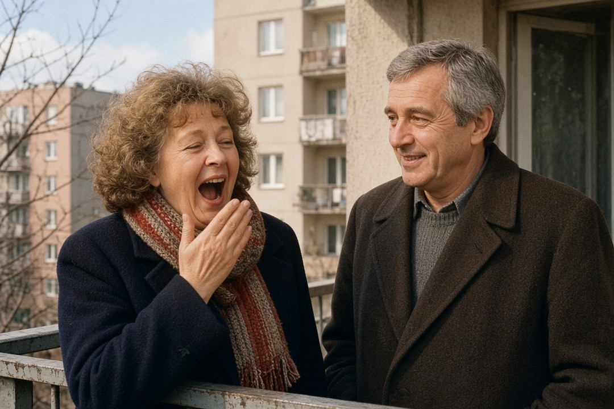
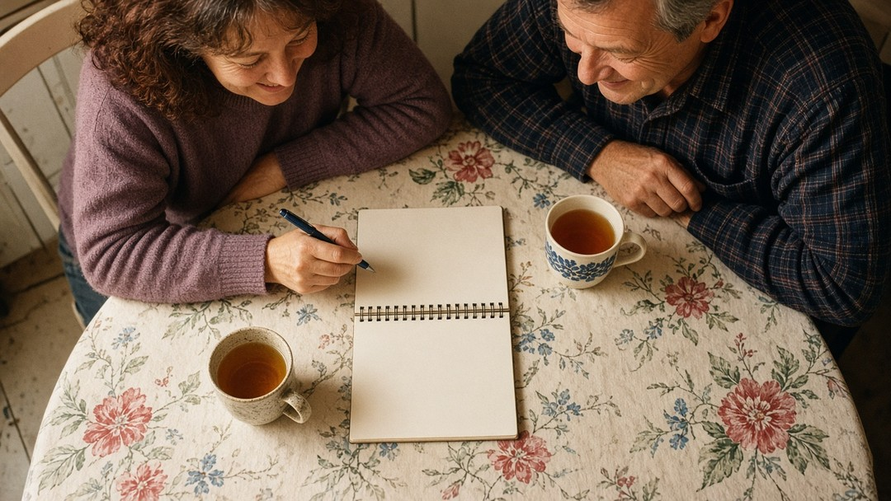
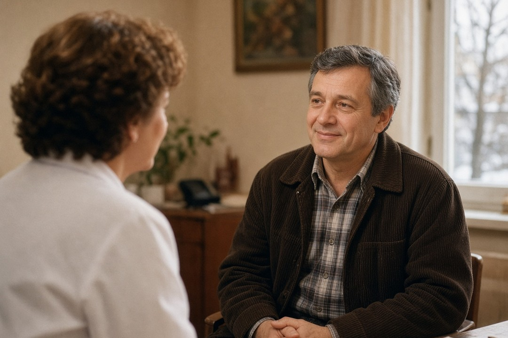
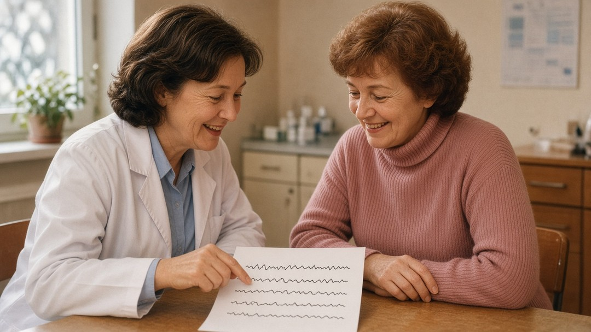

Bezdech senny objawy u osób po 50. roku życia bywają mylone ze „zwykłym” chrapaniem albo ze zmęczeniem wieku. Obturacyjny bezdech senny przerywa sen zatrzymaniami lub spłyceniami oddechu i może dawać senność w dzień — także wtedy, gdy w nocy nie pamiętasz wybudzeń. Ten poradnik pokazuje objawy, także nietypowe u kobiet, różnicę między poligrafią a polisomnografią oraz kiedy iść do POZ.
Szybka odpowiedź
Jeśli po 50. roku życia masz co najmniej dwie cechy z listy NICE — na przykład chrapanie, zauważone przerwy w oddechu i senność w dzień — omów to z lekarzem POZ. Kwestionariusz to tylko sygnał, a rozpoznanie wymaga badania snu; na NFZ polisomnografia jest w leczeniu szpitalnym.
Kluczowe wnioski
- Przy co najmniej dwóch cechach z listy NICE (np. chrapanie, przerwy w oddechu, senność) umów wizytę u lekarza POZ.
- Kwestionariusz senności lub ryzyka to sygnał do rozmowy, nie diagnoza — potrzebne jest badanie snu.
- Na NFZ polisomnografia jest świadczeniem szpitalnym; poligrafia nie jest dziś osobnym świadczeniem w poradniach AOS.
- Senność za kierownicą wymaga, by nie prowadzić w takim stanie i jak najszybciej skonsultować się z lekarzem.
Co to jest obturacyjny bezdech senny i skąd bierze się senność?
Obturacyjny bezdech senny, w wytycznych NICE nazywany też zespołem obturacyjnego bezdechu i spłycenia oddychania we śnie (OSAHS), to stan, w którym górne drogi oddechowe zwężają się albo zamykają podczas snu, gdy mięśnie się rozluźniają. Powstaje wtedy spłycenie oddechu albo całkowite zatrzymanie oddychania. Osoba budzi się albo wchodzi w lżejszy sen, żeby zakończyć te epizody, co przerywa sen i może prowadzić do nadmiernej senności.
Ciężkość opisuje wskaźnik AHI, czyli liczbę bezdechów i spłyceń oddechu na godzinę snu. Według NICE: łagodny to AHI od 5 do mniej niż 15, umiarkowany od 15 do mniej niż 30, a ciężki to AHI 30 lub więcej. Te same progi 15–29 oraz 30 i więcej pojawiają się w polskim rozporządzeniu o badaniach kierowców, gdy mowa o postaci umiarkowanej i ciężkiej z nadmierną sennością dzienną.
Po 50. roku życia ryzyko rośnie zwłaszcza przy nadwadze lub otyłości, większym obwodzie szyi, nieaktywnym trybie życia, alkoholu i lekach nasennych. Akademia NFZ wymienia też mężczyzn po 40. roku życia oraz kobiety po 50. roku życia jako grupy o wyższym ryzyku. Sam wiek nie stawia diagnozy — wskazuje, że warto uważniej przyjrzeć się snu i dziennej senności.
Ten artykuł nie sprzedaje aparatów CPAP i nie obiecuje wyleczenia. Pokazuje, jakie objawy zasługują na rozmowę z lekarzem, czym różnią się badania snu i jak w Polsce wygląda ścieżka od przychodni POZ do badania. O jakości snu po 50. i o budzeniu się w nocy piszemy osobno w materiałach o śnie i o pobudkach — tutaj skupiamy się na bezdechu.

Objawy nocne i dzienne — także nietypowe u kobiet
Objawy dzielą się na nocne i dzienne. W nocy najczęściej pojawiają się głośne, nieregularne chrapanie, przerwy w oddechu zauważone przez osobę obok, krztuszenie, częste budzenie oraz wstawanie do toalety. W dzień bywa senność, poranne zmęczenie mimo snu, kłopoty z koncentracją i poranne bóle głowy. NICE zaleca ocenę, gdy masz co najmniej dwie takie cechy.
| Kiedy | Co bywa zauważane | Uwaga |
|---|---|---|
| Noc | Głośne, nieregularne chrapanie; przerwy w oddechu zauważone przez partnera; duszenie lub krztuszenie we śnie; częste budzenie; wstawanie do toalety; wzmożona potliwość; bezsenność | Lista NFZ i cechy NICE (m.in. chrapanie, witnessed apnoeas, nocturia, choking) |
| Dzień | Senność; zasypianie wbrew woli; poranne zmęczenie mimo snu; problemy z koncentracją; poranne bóle głowy | NFZ; NICE wymienia też unexplained excessive sleepiness, tiredness or fatigue |
| Częściej u kobiet (atypowo) | Bezsenność; zmęczenie i brak energii; poranne bóle głowy; obniżony nastrój; koszmary; rzadziej zgłaszane głośne chrapanie lub zauważone bezdechy | Przeglądy ERS 2019 oraz Geer i Hilbert 2021 — nie każdy taki objaw oznacza bezdech |
U kobiet obraz bywa inny niż „klasyczne” głośne chrapanie. Przeglądy ERS 2019 oraz Geer i Hilbert 2021 wskazują, że kobiety częściej zgłaszają bezsenność, zmęczenie, poranne bóle głowy, zaburzenia nastroju i koszmary, a rzadziej same podkreślają chrapanie lub zauważone bezdechy. Przez to rozpoznanie bywa późniejsze. Po menopauzie ryzyko bezdechu rośnie, a objawy łatwo wziąć za dolegliwości menopauzalne — to nie znaczy, że każda bezsenność po menopauzie jest bezdechem. Hormonalna terapia zastępcza nie jest dziś zalecanym leczeniem bezdechu.
Jeden objaw rzadko rozstrzyga sprawę. Ważne jest połączenie: chrapanie albo przerwy w oddechu plus senność lub niewyspanie, zwłaszcza gdy partner opisuje zatrzymania oddechu. Zapisz przez kilka nocy, co się dzieje, i zabierz notatki do lekarza rodzinnego.

Kiedy umówić wizytę, a kiedy działać pilnie?
Jeśli zauważasz u siebie objawy z tabeli, pierwszym krokiem jest lekarz rodzinny (POZ). Akademia NFZ i ulotka NFZ piszą wprost: skonsultuj objawy z lekarzem POZ; jeśli trzeba, dostaniesz skierowanie do poradni specjalistycznej, na przykład pulmonologicznej lub laryngologicznej. Do takiej poradni skierowanie jest wymagane ustawą.
| Sytuacja | Co zrobić | Skąd ten sygnał |
|---|---|---|
| Chrapanie z przerwami w oddechu, senność w dzień, częste budzenie lub nykturia z innymi cechami | Umów wizytę u lekarza POZ i omów skierowanie do poradni specjalistycznej | Akademia NFZ; NICE — ocena przy ≥2 cechach |
| Senność za kierownicą lub w pracy wymagającej czujności | Nie prowadź, gdy czujesz, że zasypiasz; jak najszybciej porozmawiaj z lekarzem o ocenie snu | NFZ (ryzyko wypadków); NICE 4.1.1 o bezpiecznej jeździe |
| Podejrzenie umiarkowanego lub ciężkiego bezdechu przy badaniu kierowcy | Orzecznik kieruje na badanie specjalistyczne; do wyjaśnienia może orzec przeciwwskazania | Dz.U. 2022 poz. 2503, zał. 7 |
Senność za kierownicą to sygnał bezpieczeństwa, a nie powód do „przeczekania”. NICE zaleca informować o wpływie nadmiernej senności na bezpieczną jazdę i ryzyko zawodowe. Akademia NFZ łączy nieleczony OBS ze zwiększonym ryzykiem wypadków komunikacyjnych z powodu zaśnięcia. Zdanie typu „z bezdechem nie wolno prowadzić” jako ogólny zakaz prawny nie wynika z rozporządzenia — przepis mówi o orzekaniu przez lekarza orzecznika przy badaniach kierowców.

Kwestionariusz, poligrafia i polisomnografia — czym się różnią?
Kwestionariusz senności, na przykład skala Epworth, albo kwestionariusz ryzyka STOP-Bang może pomóc w rozmowie z lekarzem. Nie zastępuje badania snu. AASM w wytycznych z 2017 r. rekomenduje mocno (STRONG), by narzędzi klinicznych, kwestionariuszy i algorytmów predykcyjnych nie używać do rozpoznania OBS u dorosłych bez polisomnografii albo domowego testu snu (HSAT). NICE dodaje: nie używaj samej skali Epworth, żeby zdecydować o skierowaniu, bo nie wszyscy z OSAHS mają nadmierną senność.
| Badanie | Co rejestruje | Gdzie bywa i co z NFZ |
|---|---|---|
| Poligrafia oddechowa (respiratory polygraphy / HSAT) | Co najmniej 4 kanały, np. saturacja, częstość oddechów, bezdechy i spłycenia, chrapanie, pozycja ciała — bez pełnej oceny snu EEG | Często w domu; w poradniach NFZ (AOS) nie ma dziś osobnego świadczenia „poligrafia”; AOTMiT zarekomendował dodanie 30.07.2026 |
| Polisomnografia (PSG) | Pomiary jak w poligrafii plus aktywność mózgu, ruchy gałek ocznych i napięcie mięśni — ocena jakości i długości snu | Świadczenie gwarantowane NFZ w leczeniu szpitalnym (ICD-9 89.17) przy rozpoznaniu G47.3; potrzebne skierowanie do szpitala |
| Kwestionariusz (np. Epworth, STOP-Bang) | Pytania o senność lub ryzyko — wynik liczbowy albo punktacja | Sygnał do rozmowy z lekarzem; AASM: nie stawia diagnozy bez PSG lub HSAT; NICE: Epworth nie jako jedyne kryterium skierowania |
Według NICE przy podejrzeniu OSAHS oferuje się domową poligrafię oddechową. Polisomnografię rozważa się, gdy wynik poligrafii jest ujemny, a objawy trwają. W Polsce na NFZ polisomnografia jest w koszyku leczenia szpitalnego jako procedura 89.17 przy rozpoznaniu G47.3. Poligrafia nie jest dziś osobnym świadczeniem w ambulatoryjnej opiece specjalistycznej; 30 lipca 2026 r. Prezes AOTMiT zarekomendował jej dodanie do AOS, ale rekomendacja sama nie zmienia rozporządzenia — przed publikacją warto sprawdzić aktualny stan przepisów.
Aplikacje w telefonie i opaski nie stawiają diagnozy OBS. Mogą najwyżej podpowiedzieć, że warto iść do lekarza. Rozpoznanie opiera się na badaniu snu zinterpretowanym przez specjalistę.

Ścieżka NFZ i badania dla kierowców
Ścieżka na NFZ zaczyna się od POZ. Lekarz rodzinny ocenia objawy i — gdy trzeba — wystawia skierowanie do poradni specjalistycznej, na przykład pulmonologicznej lub laryngologicznej. Ustawa wymaga skierowania do ambulatoryjnej opieki specjalistycznej; wyjątki z art. 57 nie obejmują pulmonologa ani laryngologa. Do szpitala na polisomnografię też potrzebne jest skierowanie (art. 58).
Dla kierowców obowiązuje rozporządzenie MZ z 5 grudnia 2022 r. (Dz.U. 2022 poz. 2503), załącznik nr 7. Postać umiarkowana to AHI od 15 do 29 z nadmierną sennością dzienną, a ciężka — AHI 30 lub więcej z taką sennością. Przy podejrzeniu umiarkowanego lub ciężkiego OBS orzecznik kieruje na specjalistyczne badanie lekarskie; do czasu potwierdzenia lub wykluczenia rozpoznania można orzec przeciwwskazania do kierowania.
Po rozpoznaniu można orzec brak przeciwwskazań, jeśli osoba przedstawi opinię lekarza prowadzącego leczenie potwierdzającą wdrożenie leczenia, przestrzega zaleceń zapobiegających senności i poddaje się kontrolom: co trzy lata w grupie 1 (m.in. kategoria B) albo co rok w grupie 2 (m.in. kategorie C i D oraz wskazani kierowcy zawodowi). To zasady orzekania przy badaniach kierowców, zgodne z podejściem dyrektywy 2014/85/UE — nie ogólny zakaz jazdy dla każdej osoby z bezdechem.
Podsumowując praktycznie: objawy → POZ → ewentualnie poradnia specjalistyczna → badanie snu według wskazań. Kwestionariusz jest sygnałem. Senność za kierownicą wymaga natychmiastowej ostrożności i szybkiej rozmowy z lekarzem. Leczenie dobiera specjalista — ten tekst go nie zastępuje.
Najczęściej zadawane pytania
Bezdech senny objawy?
Typowe sygnały to głośne nieregularne chrapanie, przerwy w oddechu zauważone przez partnera, krztuszenie we śnie, częste budzenie, wstawanie do toalety oraz senność lub niewyspanie w dzień. U kobiet częściej bywają bezsenność, zmęczenie, poranne bóle głowy i obniżony nastrój. Same objawy nie stawiają diagnozy — potrzebna jest ocena lekarza i badanie snu.
Jak sprawdzić bezdech senny?
Zacznij od lekarza POZ: opisz objawy nocne i dzienną senność. Kwestionariusz może być sygnałem, ale według AASM nie diagnozuje OBS bez polisomnografii albo adekwatnego domowego testu snu. NICE przy podejrzeniu proponuje poligrafię oddechową; PSG rozważa się, gdy poligrafia jest ujemna, a objawy trwają.
Bezdech senny badania?
Kluczowe jest badanie snu: poligrafia oddechowa (często w domu, bez pełnego EEG) albo polisomnografia (szerszy zapis, w tym sen). W Polsce PSG na NFZ jest w leczeniu szpitalnym (procedura 89.17, rozpoznanie G47.3). Poligrafia nie jest dziś osobnym świadczeniem AOS; AOTMiT zarekomendował jej dodanie 30.07.2026.
Bezdech senny u kobiet?
U kobiet bezdech częściej bywa niedodiagnozowany, bo objawy bywają nieswoiste: bezsenność, zmęczenie, poranne bóle głowy, zaburzenia nastroju, koszmary. Po menopauzie ryzyko rośnie, a dolegliwości łatwo przypisać menopauzie. Hormonalna terapia zastępcza nie jest zalecanym leczeniem bezdechu. Przy podejrzeniu idź tą samą ścieżką: POZ i badanie snu.
Czy bezdech senny jest niebezpieczny?
Nieleczony obturacyjny bezdech senny wiąże się m.in. z powikłaniami sercowo-naczyniowymi i większym ryzykiem wypadków z powodu zaśnięcia za kierownicą — tak informuje Akademia NFZ. NICE każe mówić o wpływie senności na bezpieczną jazdę. To powód do diagnostyki i leczenia pod opieką lekarza, a nie do samodzielnego „przeczekania”.
Źródła
- NICE NG202 (2021): rozdział 1 — OSAHS: definicja, cechy do oceny, Epworth/STOP-Bang, home respiratory polygraphy i PSG.
- NICE NG202: Terms used in this guideline — progi AHI (łagodny/umiarkowany/ciężki) oraz definicje poligrafii oddechowej i polisomnografii.
- NICE NG202: rozdział 4 — informowanie o wpływie nadmiernej senności na bezpieczną jazdę i ryzyko zawodowe.
- Kapur VK i wsp.: Clinical Practice Guideline for Diagnostic Testing for Adult Obstructive Sleep Apnea (AASM 2017). STRONG: kwestionariusze nie diagnozują OSA bez PSG/HSAT; PSG lub adekwatny HSAT.
- Akademia NFZ: Obturacyjny bezdech senny – czy jesteś w grupie ryzyka? (opubl. 17.10.2022, aktualizacja 22.05.2025). Objawy nocne/dzienne, ryzyko u kobiet po 50, ścieżka POZ → poradnia pulmonologiczna lub laryngologiczna, ryzyko wypadków.
- NFZ: ulotka PDF „Obturacyjny bezdech senny” (plik 2022). Objawy, polisomnografia, skierowanie do poradni specjalistycznej (np. pulmonologicznej lub laryngologicznej).
- Rozporządzenie MZ z 5.12.2022 w sprawie badań lekarskich kierowców, Dz.U. 2022 poz. 2503, załącznik nr 7 (obturacyjny bezdech podczas snu): AHI 15–29 i ≥30 z nadmierną sennością, orzekanie, kontrole co 3 lata / co rok.
- Rozporządzenie MZ w sprawie świadczeń gwarantowanych z zakresu leczenia szpitalnego, tekst jednolity Dz.U. 2023 poz. 870: zał. 1 — procedura 89.17 Polisomnografia oraz rozpoznanie G47.3 Bezdech senny. PDF weryfikowany lokalnie (Badacz); automatyczny pobór PDF bywa niestabilny.
- Ustawa o świadczeniach opieki zdrowotnej finansowanych ze środków publicznych, tekst jednolity Dz.U. 2025 poz. 1461: art. 57 (skierowanie do AOS) i art. 58 (skierowanie do szpitala). PDF weryfikowany lokalnie (Badacz).
- Rekomendacja nr 108/2026 Prezesa AOTMiT z 30.07.2026: rekomenduje zakwalifikowanie poligrafii krążeniowo-oddechowej jako świadczenia gwarantowanego AOS w diagnostyce OBS. To rekomendacja, nie zmiana rozporządzenia.
- Bonsignore MR, Saaresranta T, Riha RL. Sex differences in obstructive sleep apnoea. Eur Respir Rev 2019;28:190030. Przegląd narracyjny ERS: atypowe objawy u kobiet, niedodiagnozowanie; HTZ niezalecane jako leczenie OSA.
- Geer JH, Hilbert J. Gender Issues in Obstructive Sleep Apnea. Yale J Biol Med 2021;94(3):487–496. Przegląd narracyjny: nieswoiste objawy u kobiet, wzrost ryzyka po menopauzie, opóźnienie rozpoznania.
Uwaga: Artykuł ma charakter informacyjny i edukacyjny. Nie zastępuje konsultacji lekarskiej, diagnozy ani leczenia.